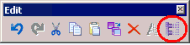
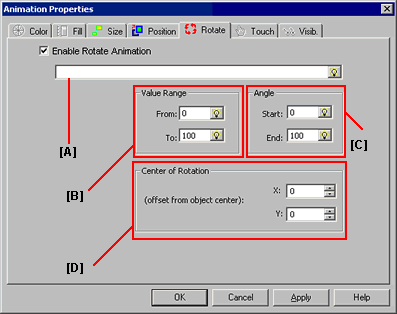
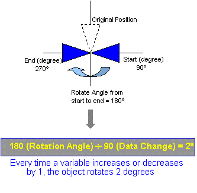

|
|
|
|
|
|
|
|
On the panel, draw an object you want to rotate at runtime. The position of the object on the panel will be the starting position for rotation.
Double-click the object to open the Animation Properties dialog box.
|
Method |
Details |
|
Double-click |
Double-click an object on the panel. |
|
Right-click |
Select the object on the panel, and right-click. Select Animation from the menu.
|
|
Icon |
Select the object on the panel, and click the Animation icon from the Edit toolbar.  |
|
Menu |
Select the object, and then select Animation from the Edit menu. |
Click the Rotate tab.
Check the Enable Rotate Animation checkbox and fill in the required fields.

Specify the variable to be used by the Rotate Animation.
Enter in the Value Range the minimum (From) and maximum (To) values for the variable. These values must be integers between -2147483648 and 2147483647.
The maximum value displayed at runtime is the 'To' value, even if the actual value is higher. Likewise, the minimum value displayed at runtime is the 'From' value, even if the actual value is lower.
Using the initial position of the object as a start point (0 degrees), enter the Start and the End angles in degrees. These values must be integers ranging from -32768 to 32767. A positive value rotates the object clockwise and a negative value counter-clockwise.
The amount of rotation based on the variable's value depends on the Value Range and the Rotation Angle. In the following example, the object rotates 2 pixels to the left or right when the variable increases or decreases by 1.
|
Value Range |
MinValue = 0 MaxValue = 90 |
|
Angle Range |
Start (degree) = 90 End (degree) = 270 |

Using the initial position of the center of the object as the start point (0, 0), specify the position of the axis of rotation in pixels.
If the relative coordinates of the center of an object are X=0 and Y=0, the object will rotate at its center (0, 0).

If the relative coordinates from the center of an object are X= 20 and Y= -20, the object will rotate 20 pixels from its center for each coordinate.

Click OK to apply the settings and close the Animation Properties dialog box.
If you type a variable name that does not exist in the project, the New Variable dialog box displays.
If you click Apply or if you click another animation tab, the settings are applied but the dialog box does not close.